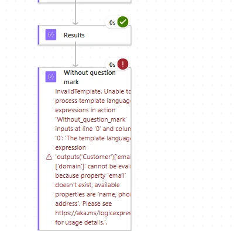
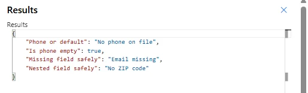

- Power Automate
- Level 2 · Working with data · 6 of 7
Handling nulls: coalesce, empty and ?
Real data has gaps: a customer without a phone, a blank form field, a column older rows don't have. A flow that assumes every value is there fails on the first gap.
Missing, null and empty
WhatThree different ways a value can be absent, and three tools to handle them.
Why
InvalidTemplate errors from missing values are the most common failed runs.DemoA customer record with no email, a null phone and no ZIP code.
{"name":"Contoso","phone":null,"address":{"city":"Seattle"}}What each field really is
| Field | State | ['field'] | ?['field'] |
|---|---|---|---|
| name | "Contoso" | works | works |
| phone | null (exists, no value) | returns null | returns null |
| missing (no property) | fails | returns null | |
| address.zip | missing (nested) | fails | returns null |
What the failure looks like

The three tools
Reading a value you didn't create
?['field']: read it safely (null if missing)Is it null or empty?
null only
coalesce(value, 'default')null, '' or []
if(empty(value), 'default', value)Use the value
| Tool | Use it to | Demo |
|---|---|---|
?['field'] | Read a field that might not exist | ?['email'] → null, no failure |
coalesce(a, b, …) | First value that isn't null | phone → No phone on file |
empty(x) | True for null, '', [], {} | phone → true |

coalesce(outputs('Customer')?['address']?['zip'], 'No ZIP code')| Piece | What it does |
|---|---|
?['address'] | Exists here. |
?['zip'] | Missing, so null instead of a failure. |
coalesce(..., 'No ZIP code') | Null, so the fallback is used. |
Null isn't the same as empty
coalesce vs empty
| phone value | coalesce(phone, 'none') | if(empty(phone), 'none', phone) |
|---|---|---|
| null | none | none |
| "" | "" (kept!) | none |
| "555-0100" | "555-0100" | "555-0100" |
Watch out
- Put
?before every['field']in the path:x['a']?['b']still fails if a is missing. - A default is right for optional data. A missing required value (an order without an id) should fail loudly or be reported.
New to this? Start from the basics optional
Null: no value at all. Different from 0, false and empty text.
InvalidTemplate: the error code for an expression that couldn't be calculated.
Build it step by step optional
- Add a Compose Customer with the record above.
- Add
coalesce(outputs('Customer')?['phone'], 'No phone on file')andempty(outputs('Customer')?['phone']). - Add the nested ZIP example.
- Add one Compose without question marks:
outputs('Customer')['email']['domain']. Test: it fails. Add the?marks and test again.
Common mistakes
?only on the last field.coalescefor empty text: it only skips null.- Hiding real problems behind defaults.